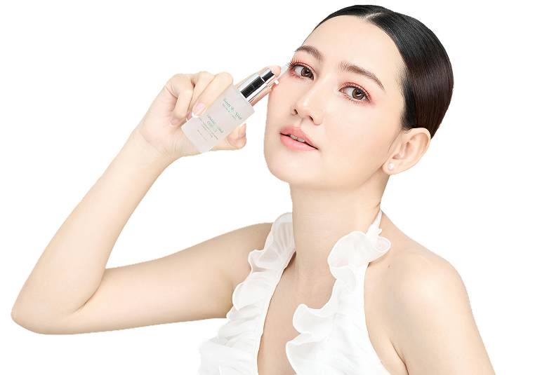
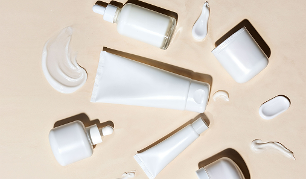

Trattamenti viso
Dall'idratazione profonda all'anti-età:
scopri i trattamenti più efficaci per ogni esigenza cutanea.

I trattamenti viso sono procedure specifiche che agiscono in profondità
per risolvere esigenze cutanee particolari: dall'idratazione intensa, al rinnovamento cellulare, fino al controllo del sebo.
I trattamenti si effettuano con cadenza settimanale o mensile e usano concentrazioni più elevate di principi attivi.
I quattro trattamenti principali
Idratazione profonda
Ripristina il livello ottimale di idratazione con maschere e sieri a base di acido ialuronico e ceramidi.
Consigliato per: Pelle secca o disidratata.
Anti-età
Protegge la pelle dai danni causati dai raggi UV, prevenendo macchie e invecchiamento precoce.
Consigliato per: Tutti i tipi di pelle, da applicare ogni mattina.
Purificante
Sigilla l'idratazione e mantiene la pelle morbida ed elastica per tutta la giornata.
Consigliato per: Pelle normale o secca.
Illuminante
Sigilla l'idratazione e mantiene la pelle morbida ed elastica per tutta la giornata.
Consigliato per: Pelle normale o secca.

A cosa servono i trattamenti viso
I trattamenti viso possono avere diversi obiettivi, a seconda delle esigenze della pelle. Possono aiutare a:
- Purificare e detossinare la pelle
- Idratare e nutrire in profondità
- Ridurre impurità e imperfezioni
- Migliorare tono ed elasticità
- Illuminare l’incarnato
- Contrastare i segni del tempo
Ogni pelle è diversa e per questo i trattamenti vengono spesso personalizzati in base al tipo di pelle (secca, sensibile, mista, grassa o a tendenza acneica) e agli obiettivi da raggiungere.
Il processo in tre fasi
Analisi della pelle
Identificazione del tipo di pelle e delle esigenze specifiche prima di scegliere il trattamento più adatto.
Il trattamento
Applicazione dei prodotti attivi specifici per l'esigenza identificata, con tecnica e tempistiche precise.
Routine a casa
Indicazioni su come mantenere i risultati con una routine domiciliare abbinata al trattamento effettuato.
Prima e dopo il trattamento
Consigli pratici per preparare la pelle e prolungare i risultati.
⚠ PRIMA
- Evita l'esfoliazione nei 3 giorni precedenti
- Non usare retinolo la settimana prima
- Assicurati che la pelle sia ben idratata
- Comunica eventuali allergie o sensibilità
✓ DOPO
- Idrata abbondantemente nelle 24 ore successive
- Usa sempre SPF 50 dopo trattamenti esfolianti
- Evita il sole directo per almeno 48 ore
- Segui la routine domiciliare consigliata
Prodotti abbinati
ai trattamenti
Per ottenere risultati visibili e duraturi nel tempo, ogni trattamento ha i suoi prodotti alleati.
